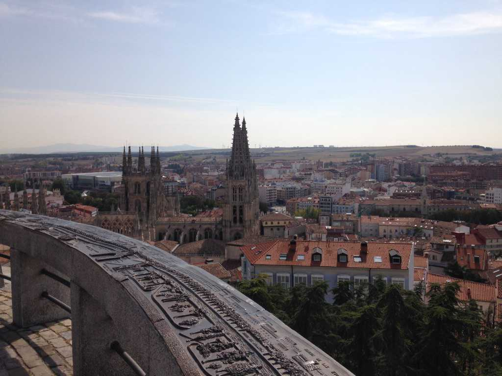

7: Goodbye
Day 15. We’re sitting amid a small cluster of dining tables in the main plaza of Burgos, sipping on wine and eating tapas. The patrons and pilgrims look happy, the cathedral towers above us. I look up and wonder, is there such a thing as a good goodbye?
Marieke looks content and tells her squirrel joke again. I try to listen, but my attention has been seized by the fact that she is leaving tonight. I take a sip of wine, and we continue talking. Stepan is with us. He reminds me of a winter wolf. His hair is white like snow with hints of dark gray. A smokey contrast. He’s observant and quiet. Does Marieke notice the way he looks at her? Or how I do too?
Stepan and I book a hostel for the night. We want one night to ourselves and away from the congested albergues of the Camino. We drop our things off and go to dinner at our favorite restaurant – the one with the Falafel – with Marieke.
Stepan goes to the bathroom, and I give M the bus note I had written for her earlier in the day. We replay every scene and memory of days passed. They seem so long ago. She rests her head on my shoulder and we sit in silence, wishing for tomorrow to cease its advance.
Suddenly Marieke spots our tall Texan, Stefan, walking across the middle of the plaza. And at his sides are Matilde and Franca!
We sprint toward the lovable Germans and American, screaming their names in unison. I hurl myself onto Franca and give her the biggest hug of my life, nearly knocking over an elderly couple in the process. Their timing could be no more perfect.
9pm. We’re in the bus station. Marieke is leaving. Marieke is leaving. I have her listen to “Soul Meets Body” by Death Cab for Cutie. Stepan is standing a few meters away from us, searching for the bus, as if he were the one departing. Maybe he’s giving Marieke and I some space. Earlier, he had said that he didn’t do goodbyes well. Does anyone?
The bus finally arrives. Marieke and I embrace, and time bends.
To our sentimental whims. To our refusal to let go of the present.
We are desparately refusing a future in which we will be nothing more than a memory, a firing of indifferent, constantly reforming neurons.
It bends because we are fighting for the ineffable, for something so palpably insatiable, for what I have felt for the first time in my life: love.
It is a love that is expansive, all-encompassing, enrapturing. It digs deeper than traditional notions of romanticism, flies higher than the devout’s devotion to God, questions everything I thought I had understood.
Time bends because we will not.
The bus parks. Travelers are hailed over. We let go. She boards. I look at her one last time. She looks back. The hint of a smile creeps over her lips like a foreign facade.
The engine whirs to life, and the bus is wheeled into the dim tunnel. Time reclaims its throne.
By some convergence of chance and choice, Marieke and I met and walked together on the Camino for two weeks. Those weeks were some of the best in my life. Her energy and enthusiasm for life was unmatched. Every blackberry she ate, every sip of coffee she had, every conversation we held was something to be cherished. She taught me that only by giving oneself up to life could life be fully lived.
“If you’re sad, feel sad. Happy, feel happy. Whatever it is, don’t push it away.”
“Having emotions just means you’re alive!”
To her life was a privilege, not a birthright, and she embraced it with every ounce of her being.
One week in, she said I had become her best friend. Now, I won’t lie. When she said this, I started imagining all kinds of romantic fantasies and happy endings between us.
“Hey children, your ol’ Gramps met this lovely lady 35 years ago while walking across Spain! It was destiny!”
“Yeah, cool story bro, but I met my love on the Camino.”
Yet what we had was so much deeper than that. To her my insecurities, fears, and struggles were valid parts of me. And yet, in comparison to my strengths as a human, they were wholly insignificant. She appreciated, awed at, and encouraged my child-like curiosity, the way I saw the world, and the purity of being she believed me to possess. “You have something special to give to the world.” She was relentless in her attempts of making me believe in myself. And I began to. I continue to.
It’s a natural human impulse to try and define our experiences and relationships by the narratives we’ve accumulated over the course of our lifetime. Sometimes though those boxes are too narrow. They’re limited by what we’ve seen and been exposed to in the past. They fail to capture or miss entirely the nuances and brevity of new and profound experiences. Some things are best left undefined. Love is one of those things.
